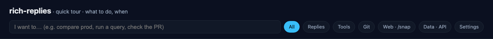
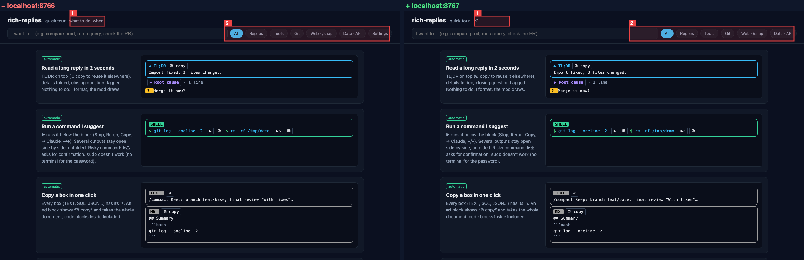
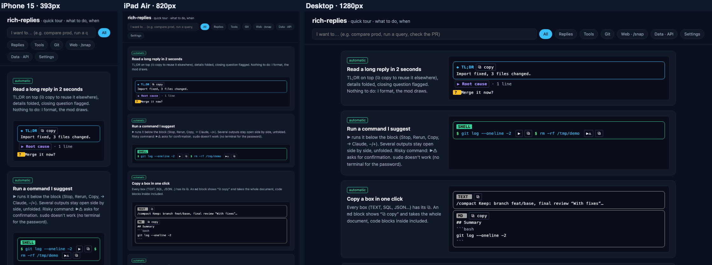
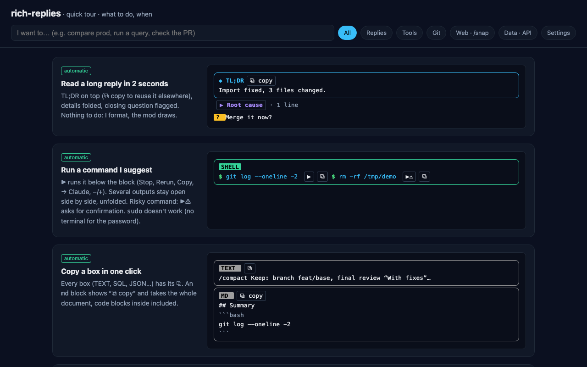
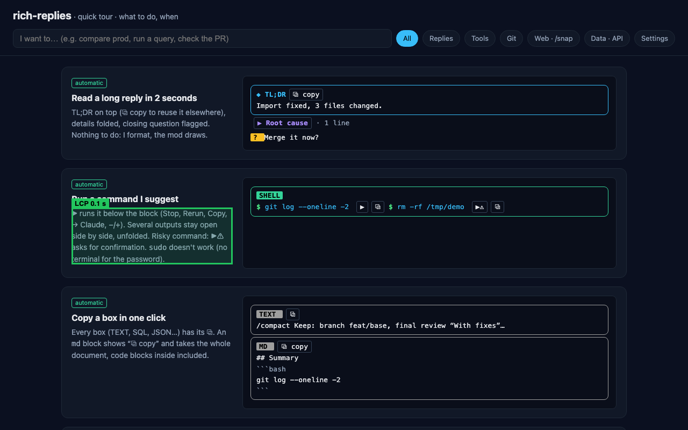
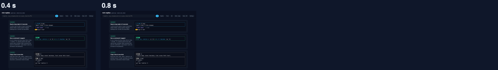
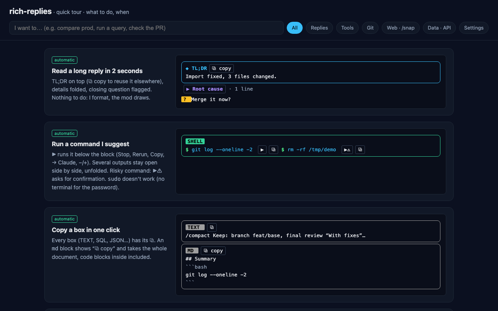
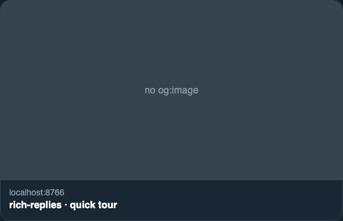

Read a long reply in 2 seconds
TL;DR on top (⧉ copy to reuse it elsewhere), details folded, closing question flagged. Nothing to do: I format, the mod draws.
Import fixed, 3 files changed.
Run a command I suggest
▶ runs it below the block (Stop, Rerun, Copy, → Claude, −/+). Several outputs stay open side by side, unfolded. Risky command: ▶⚠ asks for confirmation. sudo doesn't work (no terminal for the password).
$ git log --oneline -2 ▶⧉ $ rm -rf /tmp/demo ▶⚠⧉
Copy a box in one click
Every box (TEXT, SQL, JSON…) has its ⧉. An md block shows “⧉ copy” and takes the whole document, code blocks inside included.
/compact Keep: branch feat/base, final review “With fixes”…
## Summary
```bash
git log --oneline -2
```
Spot links, colors and images
Bare URLs become short links (a PR reads repo #367) · color square in the text and swatch strip at the bottom · thumbnail of quoted images.
See shop.example.com/cart and ⎇ app #367.
██ #38BDF8 ██ #FB7185 ██ #FF4785
Understand an error without reading 50 lines
Red line = the error that matters. ↗ chips = file:line, click = opened in Cursor.
▸ TypeError: Cannot read properties of null (reading 'name')
↗ /tmp/rr-demo/app.js:2↗ app.js:4
Know if my edit breaks something
After each Edit/Write: the project's phpcs or eslint, otherwise php -l, node --check… → Claude to fix it.
✘ 1 php -l→ Claude
PHP Parse error: syntax error, unexpected end of file on line 4
Sort my changes before committing
Hunk by hunk: Stage (then Unstage), Revert (confirmation, then Restore), → Claude. A clickable git add -p; if Unstage / Restore fails (for example the file changed around the hunk), a toast gives the reason and the line stays.
+ --- <!-- note -->
Watch my PR and its CI
Live card (every 15 s while CI runs). Red check → → Claude with the failure log.
✔ mergeable █████████████░░░░░░░ 2/3 checks ↻
✔ smoke
✘ test → Claude
◌ image
See a page without opening the browser
Captured once loaded (cookie wall accepted). --el for one block, --full for everything.

Check that my local = prod
2 columns −/+, numbered zones, text diff. --noads, otherwise ads dominate. Add --perf / --console to compare those too.

Test responsive, dark mode, states
--devices : iPhone · iPad · desktop. --dark, --hover <css>, --click <css> (open menu…).


Why the page is slow / jumps around
--perf: TTFB, LCP (green frame), weight, third parties. --cls: zones that shift. --filmstrip: loading frame by frame.


Quick audit: a11y and JS errors
--a11y: contrast, alt, unnamed links (numbered). --console: JS errors + 4xx/5xx requests.

See an article's share card
Real rendering from og:/twitter: tags + missing tags.

Design: CSS, tokens, mockup, live
--el x --css: applied CSS. --tokens: values outside the design system. --figma <url>: I compare against the mockup. --watch: recaptures on every save (/snap stop).
display: flex;
font-family: "Nunito Variable", sans-serif;
font-size: 16px;
}
Query the local database
▶ on a sql block starting with -- db: <database>. Read-only, 1 query, 10 s, 50 rows. A DELETE / UPDATE becomes ▶ simulate: the rows it would touch and their count (before/after for an UPDATE), nothing is written. Ask me “query the shop database…”.
-- db: shop
SELECT ID, post_title FROM wp_posts LIMIT 2
Test an endpoint, read JSON
▶ on a simple curl: status, time, headers, body. JSON = foldable tree (also 🌳 on json blocks, and on the JSON output of /exec, with { } text to go back to raw).
Enable a feature, change a color
Everything is off by default. One commented file (template: hooks/rich-replies/rich-replies.example.jsonc). features: true/false, applied on the next prompt; commands (changesCommand, snapCommand…) on the next session. palette: your hex values. colors: by name.
Buttons (⧉, ▶, → Claude…) only show in fullscreen mode: without it the terminal does not pass clicks on. The mode takes the terminal pane, not the screen. Back: /tui default.
{ "features": { "tldr": true, "snapCommand": true },
"palette": { "mint": "#6EE7B7" },
"colors": { "shell": "mint" } }